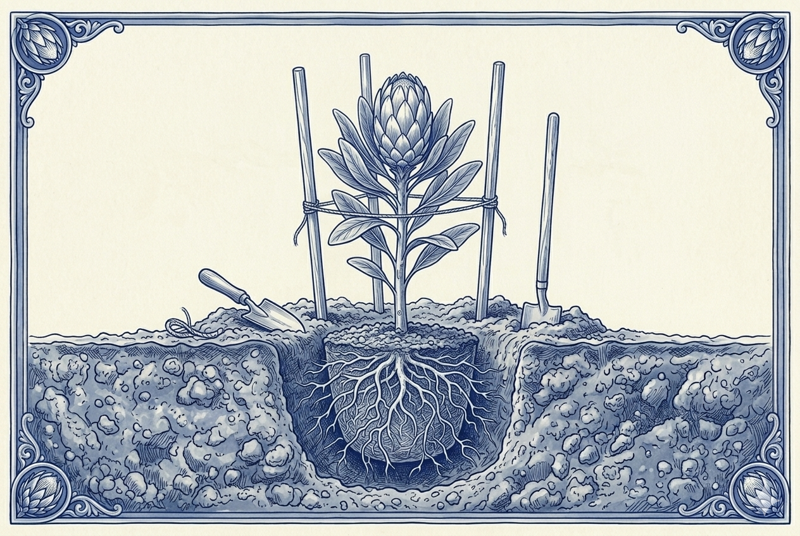
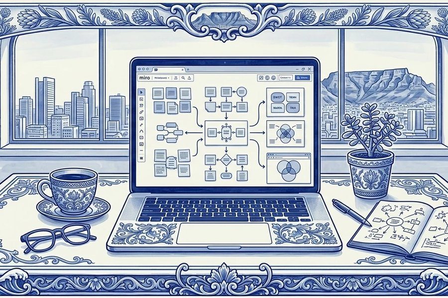

Your team adopted AI.
Were your brand standards part of the plan?
I work with business owners and leadership teams to find out whether AI is strengthening or weakening the standard of work your brand was built on. Then I help build a content operation your team can maintain with confidence.
AI content consulting for businesses that already use AI
If you've looked into AI consulting for your business, you've mostly found automations like chatbots, agents, CRM workflows, operational efficiency. That can make your business ops more efficient, but doesn't address what's happening to your content.
This practice focuses on content quality and brand coherence after AI adoption. I work with businesses where the team is already using AI to produce content and where the output has become inconsistent, generic, or hard to distinguish from what a competitor might publish.
I assess what's changed, identify where and why quality has slipped, and build documented systems that give your team a shared standard for AI-assisted content work. Independent assessment, no platform partnerships, no lock-in. Your team owns everything I build.
Services
The work is structured around where you are in the problem and whether you need clarity, a system, or ongoing oversight.
AI content operations audit
If you can tell something is off with your content since AI entered the workflow but you're not sure what, this is where to start. I produce a written read on what's working, what isn't, and where the highest-leverage changes are.
Learn more →
AI-integrated content system design
If you know what needs to change and you need someone to design the system, this is the build engagement. I design or rebuild your content operation so your team knows what AI handles, what they handle, and how the pieces fit together.
Learn more →AI advisory for SME leadership
If you don't need a project but you do need someone to think with, this is a retainer. Monthly check-ins, async availability between them, and a quarterly written read on how your AI integration is holding up against the business you're building.
Learn more →If you're not sure which of these fits, that's fine. Email me and describe what you're working on.
AI adopted without guidelines produces content without coherence
Before AI, your brand voice lived in editorial habits, institutional knowledge, and the judgment of people who'd been writing for the business long enough to know what it should sound like. AI tools don't carry any of that. Each prompt starts from zero. When multiple people prompt independently, the brand fragments across every channel they touch.
Compare your home page with your services page. If they were written by different people using different AI conversations, the tone will shift between them.
Open your most recent welcome email and your most recent nurture email side by side. If they were built at different times with different prompts, they're presenting different versions of the brand.
Read the last three proposals your team sent. If the language is interchangeable, the specific framing that used to differentiate your offer has been replaced by the default register of the AI tool.
Pull a report from before your team started using AI and compare it with a recent one. If the expertise is still there but the voice has changed, the work is harder to distinguish from what a competitor could produce.
These shifts happen gradually and don't trigger an obvious alarm. The audit identifies where they've started in your content, how far they've progressed, and what to prioritise first.
Learn more about the audit →What the research shows
The impact of AI-generated content on audience trust is measurable and growing. Three recent studies put numbers to it.
of consumers are comfortable with AI-generated content — down from 60% in two years.
eMarketer, 2025drop in reader trust when content is perceived as AI-generated, with a 14% decline in purchase consideration.
Raptive study, 3,000 adults, 2025of decision-makers say AI content published without human review erodes brand trust.
WordPress VIP, 800 respondents, 2026Selected Work
Building Think Orion's onboarding system
Designing and implementing a comprehensive client onboarding infrastructure that bridges sales and operations for a fast-scaling marketing agency.
View Case Study ↗
Restructuring a BA degree for distance delivery
A complete curriculum and instructional-design overhaul that adapted a traditional BA programme for digital-first, remote engagement while holding its academic rigour.
View Case Study ↗Testimonials
Recent Writing
I write regularly about AI's real-world implications — AI policy, the future of knowledge work, and what happens when systems don't account for the humans inside them.

South Africa's Draft AI Policy: Withdrawn for the Wrong Reason?
The fabricated citations made the headlines, but the document had deeper structural problems. On what the withdrawal means, what the commentary reveals, and where the conversation goes from here.
Read on Substack →
Did I Just Press Buttons All Day?
On what it means to spend a working day collaborating with AI, and whether the work that comes out of it counts.
Read on Substack →
How Social Media Spent More Than a Decade Reinventing 1960s Advertising
On how digital marketing circled back to principles the ad industry figured out sixty years ago, and what that means for where we go next.
Read on Substack →Frequently asked questions
This practice focuses on content quality and brand coherence. I don't build chatbots, automate CRM workflows, or set up AI agents. I work with businesses that have already adopted AI tools for content production and are dealing with the downstream effects: inconsistent output, flattened brand voice, or content that no longer sounds like it comes from a specific business with a specific point of view.
Founder-operators and senior leaders of established small to mid-sized businesses, typically 5 to 50 people. The common profile is a business where AI tools have been adopted — often informally, by individual team members — and the content has started to drift without anyone making a deliberate decision to change it. You may have noticed that your content is less distinctive than it used to be, or that different team members are producing noticeably different quality when they use AI.
AI automation consultants build systems that make your operations faster — bots, agents, workflow automations. That's useful work, but it doesn't address what's happening to the quality and coherence of your content. I assess the content itself: whether it meets your brand standards, whether it's consistent across channels, and whether the way your team uses AI is producing output you'd stand behind. The diagnostic and the system I build are both independent — they don't lead into an implementation pipeline or a platform partnership.
No. I assess content quality, diagnose where AI adoption has introduced problems, and build documented systems your team uses to maintain quality going forward. I don't sell, resell, or partner with any AI platform. If your current tools are the right ones and the problem is how your team uses them, I'll say that.
It means my recommendations aren't shaped by a platform partnership or an implementation practice I need to fill. If the audit finding is that you need a different tool, I'll recommend it. If the finding is that you need to change how your team prompts rather than switch tools, I'll recommend that instead. The deliverable is the diagnosis and the system — I don't have a build service to sell you afterwards.
Most clients start with the audit, which takes about two weeks and produces a written report with specific findings and recommendations. If the findings indicate a need for structured change, the system design engagement follows — that's a four-to-eight-week build that produces a documented content operations system your team owns and runs independently. An ongoing advisory retainer is available for businesses that want strategic oversight as tools and practices evolve.
A few indicators:
- Your content volume has increased since adopting AI tools, but engagement or conversion has not kept pace.
- Different team members produce noticeably different quality or tone when using AI.
- Your content could plausibly be published under a competitor's name without anyone noticing the difference.
- You don't have documented guidelines for how your team should use AI for content work.
If any of those apply, the audit will tell you whether there's a real problem and how significant it is.
Better prompts help with individual outputs, but they don't solve the organisational problem. If three people on your team each write their own prompts with their own interpretation of the brand voice, you get three versions of the brand — regardless of how good each individual prompt is. The system I build gives your team a shared standard: documented prompts per channel, clear decision rights, and a workflow that produces consistent output across people and tools.
Get in touch
Your team is using AI for content but the output doesn't feel right. I help you figure out why and what to change.
Email me and let's get your content working for your brand again.